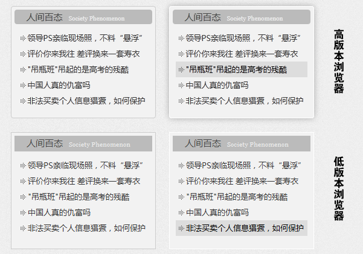
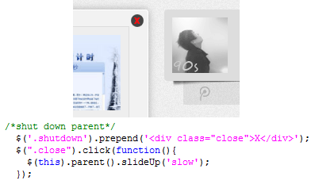

记得刚学JQUERY的时候，无意间瞅见“渐进增强与平稳退化”这句话，当时也没在意，只顾着瞅我的代码。
两天前再次翻我刚学JQUERY的笔记时，看见第一页右上角写着“渐进增强与平稳退化”这几个大字，说实话，我的确没印象了。于是乎就百度了下何为“渐进增强与平稳退化”。
这一搜索还别说，出来的解释虽然从来没有正面看见过，但其却是我学习兼容性处理中一直所感受的指导思想，只是这几个字给它系统地总结起来了而已。
提及这个得首先谈谈HTML的作用，作为一个网页来说，CSS就像是一件华丽的外衣，JS就像是灵动的身姿，而HTML才是一个人内心深处的灵魂。因此从重要性来说，HTML才是一个网页的核心内容所在。
然而在前端工作中经常会有不同使用群体环境的差异问题。这里所引出的麻烦就是，兼容性的调试，大多数网站在其页面上或多或少的都会使用一些JS特效，比如TAB、SPRY等等，这些特效在不同的用用户前所呈现的效果也是不同的。
那么在面临这种问题时，怎样才能尽量保证内容完整，页面可用的原则下处理不同用户间的差异呢，这里就不提及别人是怎么处理的了，因为我并未做过大量统计研究，我就直接说说我的想法吧！
所谓“渐进增强与平稳退化”其实是处理这种问题的两种方式，“渐进增强”指的是给所用用户同等的基本使用体验，再根据用户终端的级别给予更高级的用户更为高效轻松的用户体验。“平稳退化”同样是给所有用户同等的一个基准，但其方向却是与渐进增强相反，此方法是剥夺低级用户的一些体验。
CSS虽然分为不同版本，但在高版本的浏览器下2.0和3.0是可以同时支持的，下面是栏目框的一个特效。
为了保证所有浏览器下都能正常呈现列表内容，我为这个模块建立效果为下面低版本的浏览效果的基本外观，因为高版本浏览器支持CSS3.0的box-shadow及border-radius属性，所以在此基础上我又添加了圆角及阴影效果。
现在再退一万步，就是最原始的计算机，没有js功能或被禁用。传统的JS使用方法是先在HTML中创建一个元素，然后再通过一些事件来调用函数具体函数。这样会导致什么结果呢，比如窗口中有一个关闭此栏的按钮，点击却没有任何反应。前端人员所要做的事情是，我所展示给浏览者的页面元素都应该是可用的，出现任何不可用的元素都可以理解为对用户的欺骗（说的有点儿重），然而我们又不能为了极少数使用古董的用户而给所有人都是一个平平淡淡的页面，这种问题又该怎么解决呢？
如上图，这里这里小剧给所有浏览者提供的基准是没有关闭按钮的，只有当浏览者的环境支持JS，这个的关闭按钮才会通过JS（JQUERY）创建出来，因此，当用户浏览器不支持JS的时候，这个按钮也自然不会添加上去。
这里的实例部分仅仅提到小剧现阶段对于“渐进增强”的理解，就小剧现在的感觉，“渐进增强”的应用面肯定比“平稳退化”要广得多，且易用性也要高很多，但是在某些时候“平稳退化”肯定也有其不可替代的作用。等小剧对“平稳退化”也有一定的了解之后，我定会把我的理解分享出来，供大家批评指正！
注这里指的用户级别是根据用户的系统、浏览器、带宽等因素决定的用户等级。